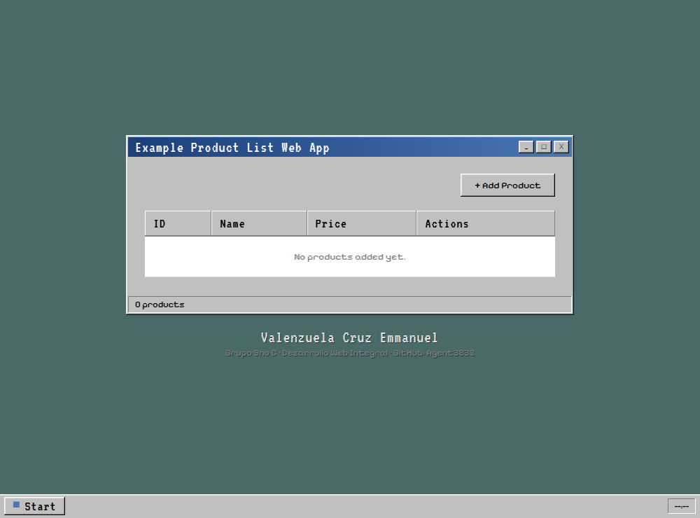
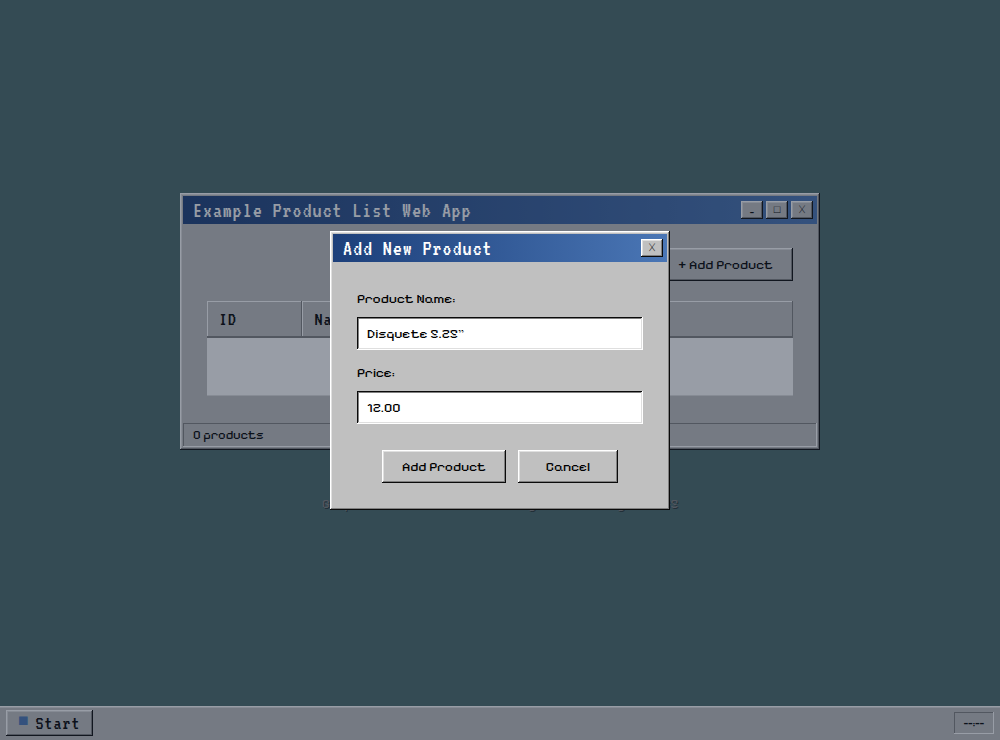
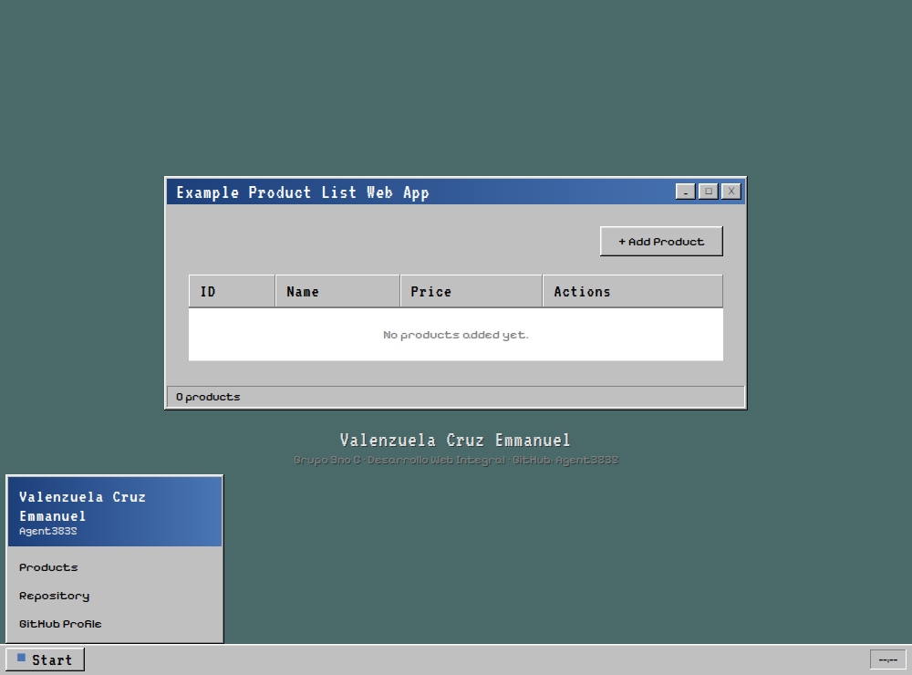

Aplicar el control de versiones a una aplicación web existente como práctica de la materia Desarrollo Web Integral. Para ello se inicializó un repositorio de Git con el proyecto base, se trabajó sobre una rama secundaria para aislar los cambios de interfaz, se registraron los cambios en commits con la convención Conventional Commits, se integró el trabajo mediante un Pull Request y se publicó la aplicación con GitHub Pages para poder demonstrationsela desde una URL pública.
La aplicación base es una lista de productos (index.html, styles.css,
functions.js) que:
exampleProductDB, object store products).#8412B0, #FF007F,
#00FFFF) y no estaba versionada en ningún sistema de control de versiones.| # | Requisito | Solución aplicada |
|---|---|---|
| 1 | Paleta de colores | Paleta retro desaturada declarada como variables CSS (:root): escritorio #4a6a6a, superficies #c0c0c0, barras de título #1c3f7a → #4a76b5 y biselados #ffffff / #dfdfdf / #808080 / #0a0a0a. |
| 2 | Tipografía | Google Fonts: VT323 en títulos y encabezados de tabla, Pixelify Sans en el texto de la interfaz. |
| 3 | Elemento visual nuevo | Barra de tareas fija estilo Win95 con botón Start y menú desplegable, reloj en vivo y bandeja del sistema. Además: ventanas con barra de título, formulario como modal y barra de estado. |
| 4 | Identidad del estudiante | Pie de página y menú Start con el nombre Valenzuela Cruz Emmanuel, grupo 9no C, materia y usuario de GitHub. |
git init git branch -M main
Se inicializó el repositorio en la carpeta del proyecto y se estableció main como rama
principal.
git add . git commit -m "chore: inicializar proyecto base"
El primer commit contiene el proyecto sin modificar, para que larama de trabajo parta de una base limpia y el Pull Request muestre únicamente los cambios de esta práctica.
git checkout -b feature/personalizacion-ui
Todo el trabajo de interfaz se realizó fuera de main, en la rama
feature/personalizacion-ui. Así main permaneció siempre desplegable.
git commit -m "style: actualizar paleta de colores y tipografia principal" git commit -m "feat: convertir el formulario de productos en modal" git commit -m "feat: agregar componente visual y nombre del estudiante en el footer" git commit -m "docs: agregar reporte PDF de la practica de versionamiento"
| Commit | Rama | Mensaje | Contenido |
|---|---|---|---|
6c201b6 | main | chore: inicializar proyecto base | Proyecto base sin modificar (HTML, CSS, JS, IndexedDB) |
e4765b1 | feature/… | style: actualizar paleta de colores y tipografia principal | Variables CSS con la paleta retro, biselados, centrado y Google Fonts |
3f615b0 | feature/… | feat: convertir el formulario de productos en modal | Formulario en ventana modal, botón sobre la tabla, JavaScript del modal |
e470e0e | feature/… | feat: agregar componente visual y nombre del estudiante en el footer | Barra de tareas con Start y reloj, pie de página con la identidad |
| (este commit) | feature/… | docs: agregar reporte PDF de la practica de versionamiento | Este reporte (HTML y PDF) dentro del repositorio |
Total: 5 commits (1 en main y 4 en la rama secundaria), dentro del límite de 2 a 5.
gh repo create versionamiento-valenzuela-cruz --public --description "Practica de control de versiones" git remote add origin https://github.com/Agent3835/versionamiento-valenzuela-cruz.git git push -u origin main git push -u origin feature/personalizacion-ui
El repositorio se creó como público, ya que GitHub Pages solo está disponible para repositorios públicos en el plan gratuito. Ambas ramas se subiríon al remoto.
gh pr create --base main --head feature/personalizacion-ui --title "..." --body "..." gh pr merge --merge
El PR describe los cuatro cambios de interfaz, los commits involucrados y las notas técnicas. Se fusionó
con merge commit (no squash) para conservar el historial completo de la rama y que la fusión
quede registrada como tal. La rama feature/personalizacion-ui se conserva en el remoto.
gh api -X POST repos/Agent3835/versionamiento-valenzuela-cruz/pages \ -f source[branch]=main -f source[path]=/
GitHub Pages se activa desde la rama main en la raíz del repositorio
(/docs no se usa porque index.html está en la raíz). Después del
despliegue, la aplicación queda disponible en una URL pública con https, requisito
indispensable para que IndexedDB funcione.
El diseño imita una estética Windows 95/98 con colores desaturados: escritorio teal, ventanas grises con bordes biselados de dos capas (luz arriba-izquierda, sombra abajo-derecha), barras de título con degradado azul marino, campos de texto "hundidos" y botones que se hunden al pulsarse.



Para asegurar que los cambios visuales no rompieron el funcionamiento de la aplicación, se realizaron tres verificaciones:
| Verificación | Resultado |
|---|---|
| Sintaxis de JavaScript | node --check functions.js sin errores en cada commit de JavaScript. |
| Pruebas funcionales (jsdom + fake-indexeddb) |
24 pruebas, todas correctas: alta y baja de productos con IndexedDB, modal (apertura, cierre por X / Cancel / Escape / clic exterior, limpieza de campos, tecla Enter), estado vacío, menú Start (apertura, clic exterior, Escape, enlace a productos), reloj y pie de página. |
| Estilos calculados (Chrome, getComputedStyle) |
Confirmó la paleta aplicada (rgb(74,106,106) escritorio, rgb(192,192,192) ventana), las tipografías de Google Fonts, los biselados de botones y tabla, el centrado del layout, el modal oculto por defecto y la barra de tareas fija. |
IndexedDB
(open, onupgradeneeded, getAll, add, delete)
se conservó intacta: la práctica es de control de versiones, no de rehacer la base de datos. Los
cambios se limitan a la capa de presentación (HTML, CSS) y al JavaScript de interfaz (modal, menú Start,
reloj). El repositorio recibó 533 líneas agregadas y 90 eliminadas en los tres archivos.
http:// o
https://: si se abre con doble clic (file://), el navegador bloquea IndexedDB y la
tabla aparece vacía. Por eso el despliegue en GitHub Pages, que sirve la aplicación con https,
es necesario para demostrarla correctamente.
main base + fusión
feature/personalizacion-uimain.
index.html
styles.css
functions.js
reporte/El trabajo muestra por qué el control de versiones es indispensable en el desarrollo web. Partir de un proyecto sin historial impide saber qué cambió, quién lo cambió y por qué; con Git, cada cambio queda registrado con un mensaje que explica su intención, y se puede volver a cualquier punto anterior del proyecto.
El uso de ramas resultó especialmente útil. Al desarrollar la personalización de la
interfaz en feature/personalizacion-ui, main se mantuvo intacta y desplegable: si la
nueva interfaz hubiera tenido un error, el sitio original seguía disponible y la corrección se hacía
en la misma rama, sin reconstruir nada. Esta seguridad desaparece cuando todo se desarrolla directamente sobre la
rama principal.
El Pull Request añadió una segunda capa de revisión: los cambios se presentan como un conjunto ordenado y con descripción antes de integrarse, lo que permite detectar omisiones y dejar registro de las decisiones. La fusión mediante merge commit conserva además la traza completa de la rama, en lugar de aplastarla en un solo commit.
Finalmente, GitHub Pages completa el proceso con el despliegue continuo: cada fusión en
main actualiza automáticamente la URL pública, sin pasos manuales. Eso permite revisar el
resultado real en un navegador, con https y con IndexedDB funcionando, y detectarlo antes de
presentarlo. El ciclo completo —ramas, commits, Pull Request, fusión y despliegue— se convierte en un
proceso repetible y verificable: cualquier revisión puede reconstruir exactamente cómo se llegó
a la versión publicada, y los errores se detectan y corrigen con la misma eficacia de un cambio local.
Palabras clave: control de versiones, Git, ramas, Pull Request, merge, GitHub Pages, despliegue continuo, IndexedDB, HTML, CSS, JavaScript.